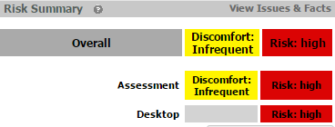
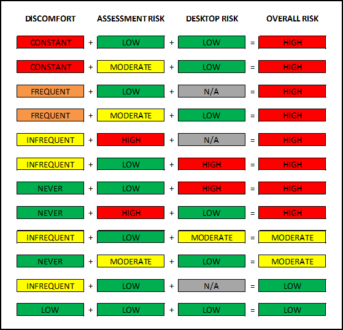

Different risk levels are calculated in OES and reflected in the user dashboard:
Assessment risk is initially set based on the scored answers to the self-assessment questions.
Each answer to each question in the assessment has an associated risk contribution. Non-neutral responses increase risk to a degree identified by longitudinal analysis of Cority data1. This forms the numerical basis for a risk factor coefficient. In addition, other public research and statistical methods2 determine a subset of risk factors that have a multiplicative effect on other risks (forming a risk multiplier > 1.0). The risk score is the sum of all risk coefficients times the product of all the risk multipliers.
The risk score is updated when:
1 - Cority analyzed the odds ratio of onset or increased discomfort in 6 body parts associated with responses. Sample of ~75K users over 5 years.
2 - Factors with sufficiently high odds-ratio with p<0.001, or with research indicating multiplicative affect have multipliers>1.0
Desktop Risk is a statistic that estimates a user's risk of developing discomfort based on the objective observations from the OES-companion desktop application RSIGuard.
Desktop risk will be calculated after RSIGuard has transmitted 28 days of observation data to the OES.
Desktop risk is a function of:
Desktop risk is a continuous statistic, meaning that a lower number is associated with lower risk, and a higher number, a higher risk. If the user does not have RSIGuard installed, or RSIGuard is not communicating with OES, "N/A" will be shown as the user's Desktop Risk.
End users can reduce their Desktop risk by reducing keyboard and mouse exposure, and/or by improving work/rest patterns.
View detailed information about the Desktop Risk
Discomfort frequency is based on the user's response to the discomfort frequency question in the OES online self-assessment. Discomfort may also be updated from the user's OES dashboard. Discomfort frequency is reported as constant, frequent, infrequent, or never.
Discomfort Risk is simply neutral for values of infrequent or never, and high for values of constant and frequent.
In OES, two discomforts may be shown shown, Assessment discomfort and Overall discomfort. There is currently NO difference between ASSESSMENT discomfort and OVERALL discomfort. If only one discomfort level is included, these will always be the same value.
Note: It is technically possible, although not usual, for a customer to have a Baseline Risk along with a Baseline Discomfort, or a Baseline Risk with no Baseline Discomfort. If they do have Baseline Discomfort, then Overall Discomfort may be based on more than just Self-Assessment Discomfort.

Overall risk is the highest value between the available risk levels (Assessment, Desktop and Discomfort).
Note: Discomfort can be removed from Overall Risk as a configuration. In that case, Overall risk will be the highest value between Assessment and Desktop risk.
Overall Risk calculations are shown in the table below:
